Hasle-Løren
Mitt lokale idrettslag har i utgangspunktet en fin logo, men den blir gjengitt svært forskjellig på forskjellige flater, og typografien er ikke pen. Som et hobbyprosjekt har jeg oppdatert og ekspandert profilen og forsøkt å tilpasse den den digitale tiden.
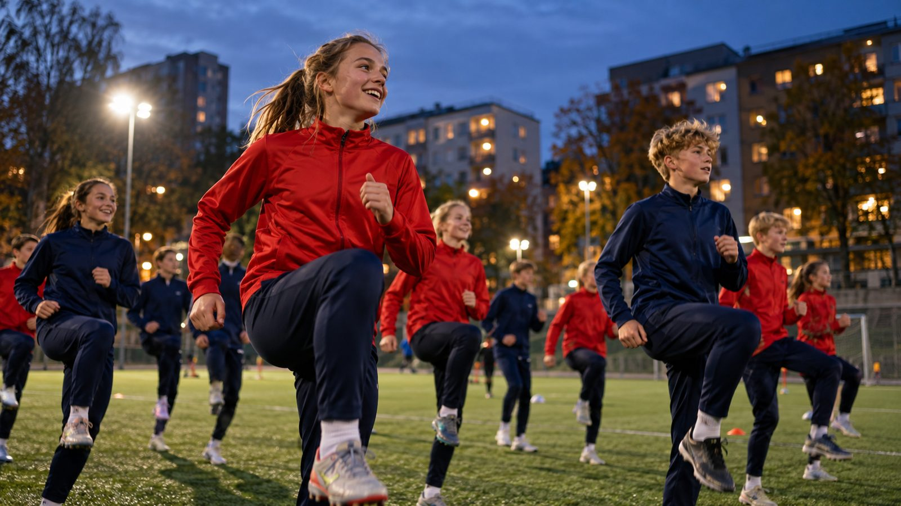
Utgangspunktet
Ett merke, mange varianter
Kanten skifter mellom gull, blått og tynn mørkeblå. Bokstavene er sperret eller tette, i ulike skrifter. Rødt og blått finnes i flere nyanser. Hver plakat og hvert innlegg lages fra bunnen, fordi det ikke finnes felles filer eller regler å slå opp i.
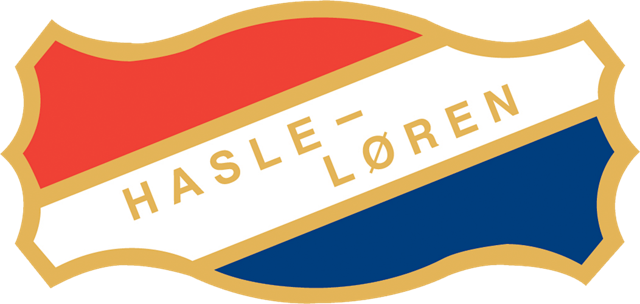
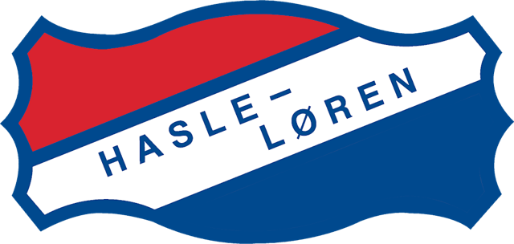
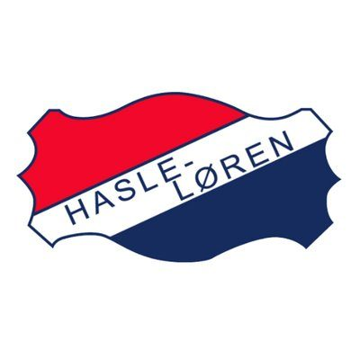
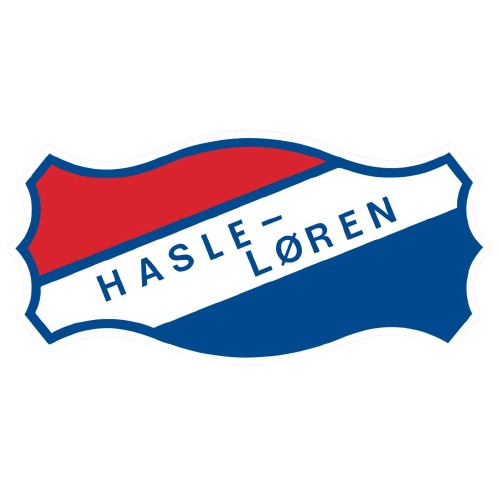
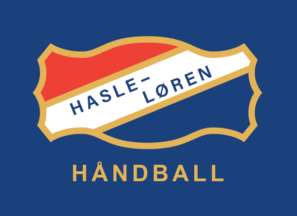
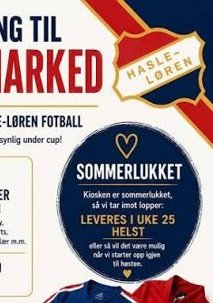
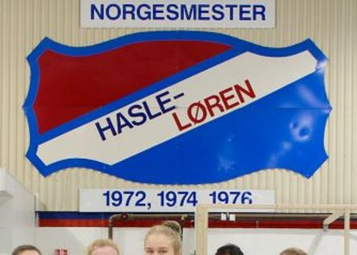
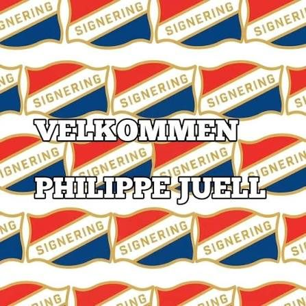
Merket
Kjent merke, nå i én versjon
Formen, rødt og blått og båndet er beholdt. Det som er nytt, er at det finnes én riktig versjon. Hvite, svarte og ensfargede utgaver dekker farget bunn, bilder og tekstiler. Det gamle merket med årstallet 1911 blir arkivmateriale.
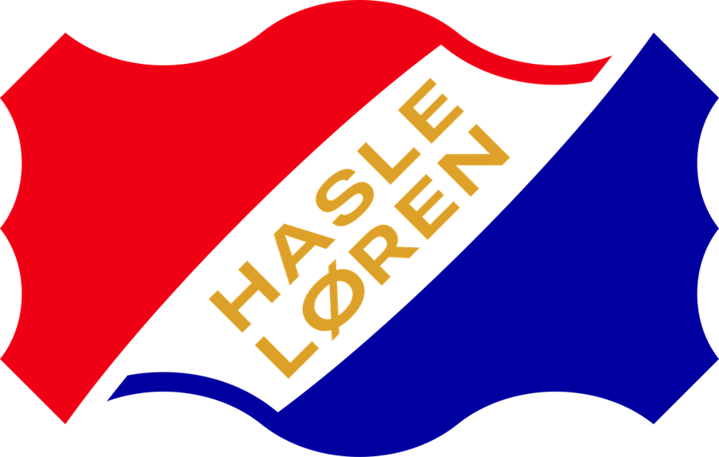
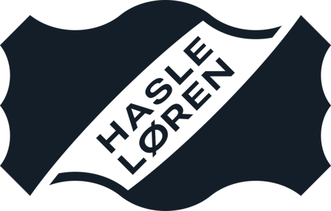
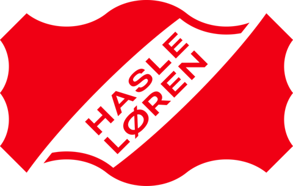
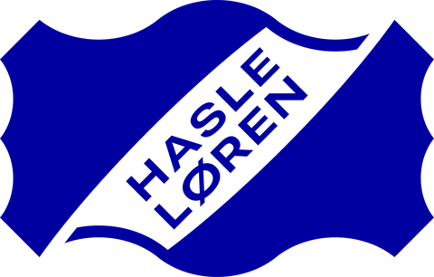
Avdelinger
Alle idretter, samme familie
Hver avdeling bruker klubbmerket i sin egen farge, med navnet under. Fotball, ishockey og ski bruker hovedfargene. E-sport er ikke en avdeling i dag. Den er med for å vise hvor enkelt profilen kan utvides.
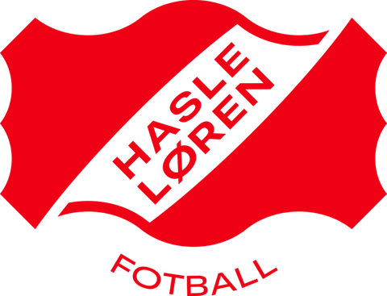
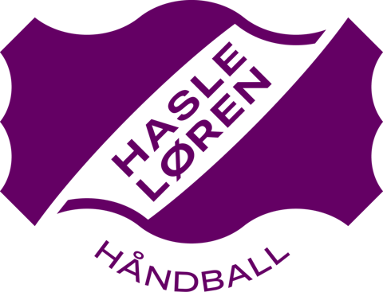
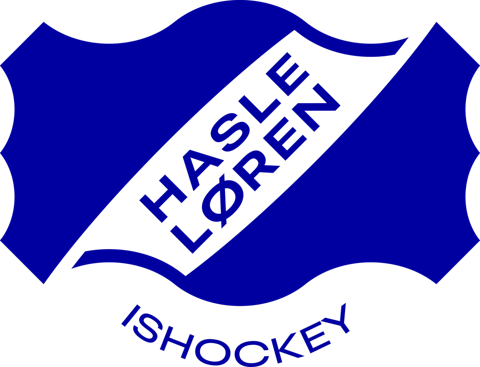
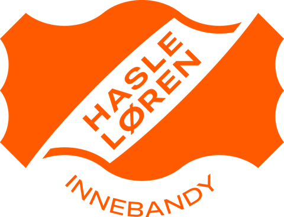
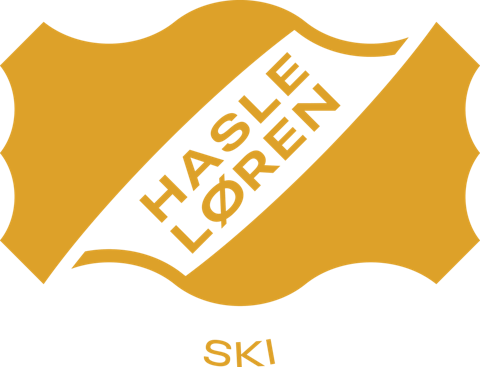
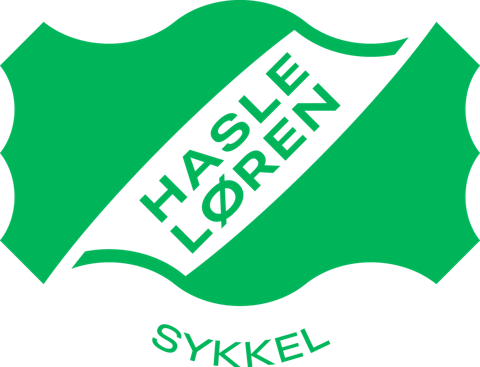
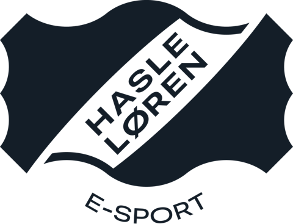
Samme merke, samme oppsett. Bare fargen og navnet skifter.
Farger
Fargene klubben allerede er kjent for
Rødt og blått bærer uttrykket, nå i faste nyanser. Gull er en aksent og brukes aldri som tekst på lys bunn. Kullsvart er den eneste nye fargen, for tekst og mørke flater.
Former
Formene kommer fra merket
Omrisset av merket deles opp. Bitene blir bakgrunner og bilderammer på nett, i sosiale medier og på trykk. De skaleres alltid likt i begge retninger, så buene holder seg runde, og de kan beskjæres av formatkanten.
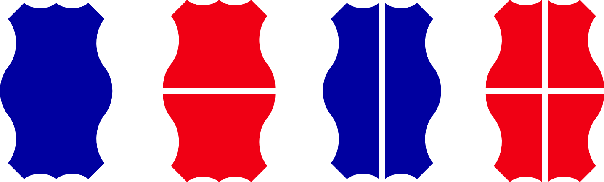
Ti eksempler på hvordan bitene møter et liggende format.